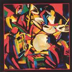

Home Artist links Label link

Soft Machine - Live In Paris
| Artist: | Soft Machine |
| Title: | Live In Paris |
| Label: | Cuneiform Rune 195/196 |
| Length(s): | 47/58 minutes |
| Year(s) of release: | 2004 |
| Month of review: | [08/2004] |
Line up
Elton Dean - saxello, alto sax, electric piano
Hugh Hopper - bass
John Marshall - drums
Mike Ratledge - electric piano, organ
Tracks
disc 1
| 1) | Plain Tiffs | 3.30
|
| 2) | All White | 6.23
|
| 3) | Slightly All The Time | 13.07
|
| 4) | Drop | 7.49
|
| 5) | M.C. | 2.59
|
| 6) | Out-bloody-rageous | 13.22
|
disc 2
| 1) | Facelift | 17.50
|
| 2) | And Sevens | 8.54
|
| 3) | As If | 8.27
|
| 4) | LBO | 6.07
|
| 5) | Pigling Bland | 6.04
|
| 6) | At Sixes | 10.35
|
The samples of Live In Paris occur by kind permission of
Cuneiform Records
Summary
Over the past years Cuneiform has released several CDs with live material
from Soft Machine's heydays. This is another installment.
The music
This double CD contains an integral recording of a 105 minute concert Soft
Machine did in Paris on May 2nd, 1972. That rendition of the band was
together for less than half a year, recording together only the second side
of the band's 5 album.
The music on these discs is just a little more jazz oriented than we would
normally get of SM's already jazz oriented progressive music. The Fender
Rhodes sound helps a lot in establishing this effect, at times taking the
lead when Dean's saxes are fully silent. The bass and drums are the firm
basis on which sax and keys can build, never excessing in any way. This,
together with the free based way in which the music is played creates the
jazzy sound.
This jazzy approach to music has made for quite some musical endeavours into
the neverlands referred as meandering. Somehow, however, Soft Machine manage
to refrain from ending up there.
Conclusion
The different renditions of Soft Machine each have their merits. This one
clearly will make the jazz lover more happy than the progressive lover. If
faced with the choice the latter would probably be more happy with such
releases as Backwards, having said that, those into the characteristic sound
of Soft Machine will not be disappointed with this one. This is yet another
release in which the band majestically steers away from any drivel, staying
true to their own style.
© Roberto Lambooy